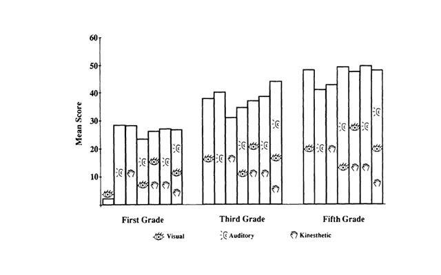
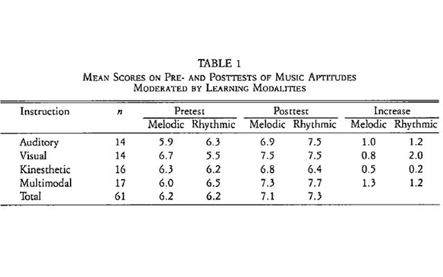

Rhythm & Meter - Difficult to Teach?
By Kevin Tuck, as part of an extended study in music education methodology
during his Masters of Music degree in 1995
- Rhythm is defined as "The subdivision of a span of time into perceptible sections; the grouping of musical sounds,
principally by means of duration and stress."
- Rhythm is put into 3 parts: 1) tempo beats, 2) meter beats and 3) melodic rhythm
- Steady tempo beat is extremely important for students to be able to understand rhythm
- Meter beats - "the division of the tempo beat into two or three"
- Meter beats and tempo beats are essential to melodic rhythm and it is essential in the tonal aspects of music
- Metric accent is maybe most important; helps musicians relate to time signatures and what they mean
- Students learn better with aural and visual help rather than when taught with aural aids and mnemonics alone
- Many rely on: "teaching rhythm first as sound, before any notation is introduced."
- Lois Choksy recommends that teaching rhythm should be done by students imitating rhythm clapped or tapped by the teacher
- Commonly used techniques for teaching rhythm: Counting aloud, Tapping the underlying
beat, Using the metronome, Clapping or tapping the phrase rhythm, Ensemble experience,
Conducting, Use of words and mnemonics
Responses to Rhythm Patterns When Presented to Children through Auditory, Visual, and Kinesthetic Modalities
By Diane Persellin, Journal of Research in Music Education 40.4 (1992): 306-315.
- Tested on first, third and fifth graders
- First, children took a pretest to get a control before applying the special teaching methods on rhythmic patterns
- The test was a sheet of paper with various rhythms children had to clap to
- Afterwards, children were either given a visual (notes) of the rhythm, playing (listened to rhythm)
of the rhythm, tap on the forearm (kinesthetic) or a combination of each of them
- This would show if they had improved on their rhythmic accuracy
- The results were:

Effects of Traditional Methods of Rhythm-Reading Instruction
By Muriel Bebeau, Journal of Research in Music Education 30.2 (1982): 107-119. Print.
Analysis of rhythm-reading methods
- Orff / Kodaly helps with learning rhythm for younger children
- Traditional method teaches children a steady pulse
- Simplified method teaches children how to say the note
- Another simplified method teaches a speech cue method used in Kodaly which teaches younger
children to pair the symbol with the notes
Method
- In the speech cue treatment, the information given the children consisted of spoken cues and
associated kinesthetic cues
- Tested on third graders out of 78 students in 2 groups
- From each group, 30 students were randomly chosen for comparison of gain scores
- This class was selected because they had not had group instructions in the readin
g of rhythmic patterns as a part of their school music program
Procedures
- Children were permitted to select one of the several methods for playing the pretest
- The children completed all pretests by clapping
Results
- Most pupils in both groups had pretest scores of 0
- There was no significant difference existing between the mean pretest scores for the groups
Effects of Rote Versus Note Presentations on Rhythm Learning and Retention
By Patricia Shehan, Journal of Research in Music Education 35.2 (1987): 117-126. Print.
- In the word method, the students got mixed up with the words and syllables
- In Orff's method, he used sentences to help remember rhythm
Recognition experienced teacher was involved
- used flashcards, experimenter claps 1 of 3 cards and students have to guess which card is being demonstrated
- pretest mean was highest in this category(8.02/20)
- post-test mean gain was 2.76 ? (10.78/20)
Dictation experienced teacher was involved
- students used popsicle stick kits consisting of 20 popsicle sticks,
10 half popsicle sticks, 6 dried white navy beans, and 5 2-cm metal rimmed key tags with paper centers
- students used the kits and made note configurations on special flashcards
- the experimenter played rhythms on a bongo drum for the students to write with popsicle sticks
- pretest mean was 0.3/20
- post-test mean gain was 1.27 ? (1.3/20)
Performance experienced teacher was involved
- measured students’ ability to correctly clap a measure of 4/4 or 6/8
- student would clap the rhythm on the flashcard and would be marked right or wrong
- pretest mean was 0.5/20
- post-test mean gain was 3.03 ? (3.08/20)
Effects of Learning Modalities on Melodic and Rhythmic Retention and on Vocal Pitch-Matching by Preschool Children
by Diane Persellin, Perpetual and Motor Skills 78 (1994): 1231-1234. Print.
Tested children aged 4-5 on rhythm and pitch matching
The children were first given a pretest before having aids to set a control
Then, they were either given a visual, kinesthetic, auditory or multimodal aid to see how their results improved
The results were:

The article clearly says, "Teachers should be encouraged to consider learning styles when
planning instruction. When teachers use only the kinesthetic learning modality to the exclusion
of others, music learning may be impeded."
Supports our Rhythm Ramp invention because it is multimodal.
Advances in Music Reading Research
By Helga Gudmundsdottir, Music Education Research, 12.4 (2010): 331-338. Print
Introduction
- Fluent music literacy is harder to learn
- Many of the children have failed by the ways music teachers are taught and teaching children to read music
- Sight singing and music reading abilities are about the same because they both require pitch and rhythm reading
- Sight singing is not as efficient for fluency and is not as necessary as music reading
Music reading
- Music reading involves 2 distinct skills: reading and mechanical skill
- The staff reading notation is a multiple task
- Music reading is a construct process in music
- Studies on perception indicate that pitch information and timing information is coded separately
- In music reading, it entails the separate process to read pitch and timing
Ability to read music
- Most music readers acquired their skill early in life without too much struggle
- In a study on music students taking graded exams, there were only low correlations found
between performance ability and sight reading scores
- The correlation was somewhat higher for students taking grade 4 than those taking grade 3 exams
- Music reading skills do not necessarily develop in parallel with performance abilities
- There is a considerable number of children between those 2 abilities
Difficulties in reading music
- With other complex skills, music reading is not very hard to those who have mastered
the skill as long as the reading material is within the scope of the music readers capacities
- Music reading is an automatic process in trained musicians
- Music students seem to reach the this level effortlessly should not be much of an interest to music educators
Symptoms of success in music reading
- Expert music readers look ahead of the piece they are playing more often than less proficient readers
Music reading and pitch structure
- Studies show that children learn better with tonal patterns than with traditional music notation
- Learning the general structure was more effective instead of individual pitches
The Healing Power of Music
by William Forde Thompson and Gottfried Schlaug, Scientific American Mind, March/April 2015 33-40. Print
7 ways music benefits the brain:
- Physical – encourages people to move to the beat
- Emotional – induces emotional states by initiating changes in distribution of neurochemicals than can induce moods
- Engaging – engrossing and rewarding causing patients to be motivated to participate with enthusiasm focus and dedication
- Permits synchronization –helps listeners synchronize rhythm, by tapping along, and melody, by singing along, addressing problems of timing, initaiton and coordination in people with stroke, Parkinsons and other brain disorders
- Social – musical activities can be collective experiences to help in recovery, rehabilitation and coping
- Persuasive – music can make lyrics and films seem more compelling with leads to positive attitude in patients
- Personal – personal nature of music can evoke memories and help individuals maintain a sense of identity
Everyone Can Gain from Making Music
by Julia Calderone, Scientific American Mind, March/April 2015 40-41. Print
Benefits
- Music helps improve process speed, memory and attention
- Older musicians tend to have stronger memory, more focused attention and faster brain processing
- Music improves multitasking
- Making music is beneficial because it requires integration of various senses
Music Education and the Brain: What Does It Take to Make a Change?
by Anita Collins, National Association For Music Education, Vol. 32(2) 4-10 2014 4-10. Print
- There are differences in structure and function of brains of musicians as compared to non-musicians
- Musicians have good memory
- Musicians understand language well
- Large number of benefits from music education including improvement in memory, language acquisition, executive function, and brain plasticity (brain's ability to CHANGE throughout life)
Conclusions:
- Starting early and learning an instrument for at least two years results in positive changes in brain structure and function
- The earlier children understand music, the more they benefit
Music and Cognitive Development: From Notes to Neural Networks
by Rebecca Ann Shore, NHSA DIALOG, 13(1) 53-65. Print
- Complex music is the art form with the strongest evidence of cognitive improvement
- Piano lessons increased intelligence quotient (IQ)
- Listening to complex music helped rates negotiate mazes faster
- Good to start music early – found that regions of the brain active in making music were larger in musicians who started their musical training before age 7, when grains were younger and more plastic
- Music training helped improve skills in geometry
- Kodaly music training made students ahead of peers in math
- Playing piano helps spatial-temporal reasoning
- The results reported in this article highlight the importance not only incorporating some type of organized music training into our educational environments but also incorporating it into the earliest possible environments
Developing Teachers for Early Childhood Programs
by Carol Scott-Kassner, Music Educators Journal, July 1999 19-25. Print
- Emphasizes on the importance of teaching music to young children
- Oprah Winfrey made a plea for parents to sing to their children
- There are approximately 15 million children under the age of five in day-care and preschool settings in the U.S.A.
- Close examination reveals that day-care and early childhood programs are often lacking in musical direction
Early Childhood Brian Development and Elementary Music Curricula: Are They in Tune?
by Larissa K. Scott, GMT, Fall 2004 20-27. Print
- The informal education that occurs before formal education begins shapes children’s brains and affects the rest of their lives
- The first four years of life are period of particularly rapid development of brain structure and function
- Elementary music curricula are often based on the philosophies of musicians, such as Kodaly, Orff and Dalcroze, who worked frequently with children. These musicians saw a need for change in music education
- During the first two to three years of elementary music instruction, children should be immersed in active music making
Older Adults Benefit from Music Training Early in Life: Biological Evidence for Long-Term Training-Driven Plasticity
by Travis White-Schwoch, Kali Woodruff Carr, Samira Anderson, Dana L. Strait and Nina Kraus, Journal of Neuroscience, November 6, 2013 17667-17674. Print
- Aging results in pervasive declines in nervous system function
- In the auditory system, these declines include neural timing delays in response to fast-changing speech elements –
this causes older adults to experience difficulty understanding speech, especially in challenging listening environments
- These age-related declines are not inevitable
- Older adults with a lifetime of music training do not exhibit neural timing delays
- Evidence suggests that musicians have nervous systems distinct from non-musicians
- Early music training sets the stage for subsequent interactions with sound
- These experiences may interact over time to sustain sharpened neural processing in central auditory nuclei well into older age